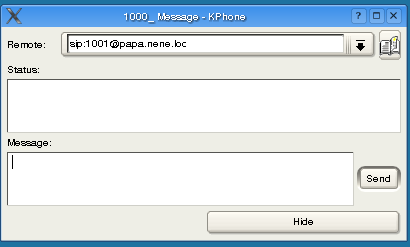
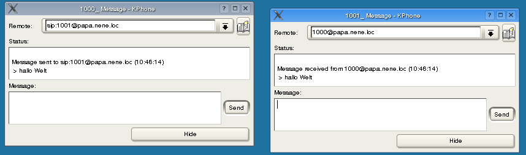

This feature uses the SIP-signaling resources. This may stress the proxy and thus the proxy may discard or shorten messages! A more reliable messaging tool is described later.

Remote
Enter or change the destination (Partner-URI)
Status holds the message flow
Message
type and send messages.
